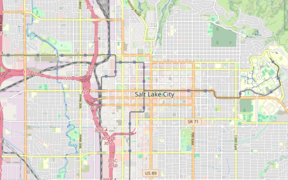
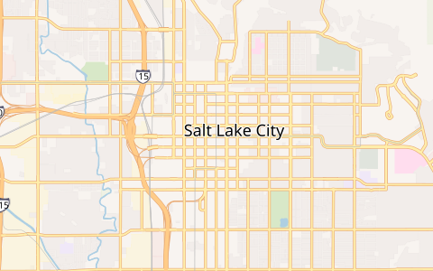
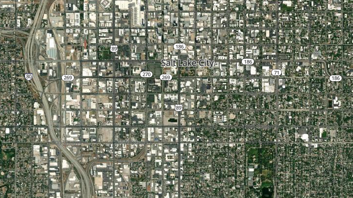
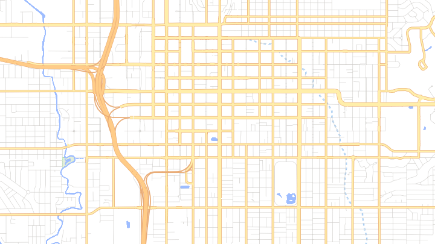
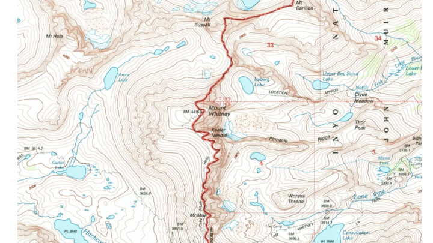
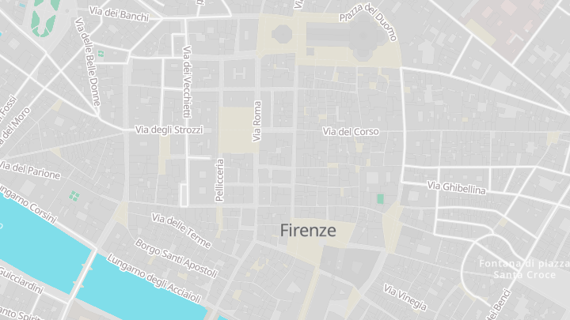
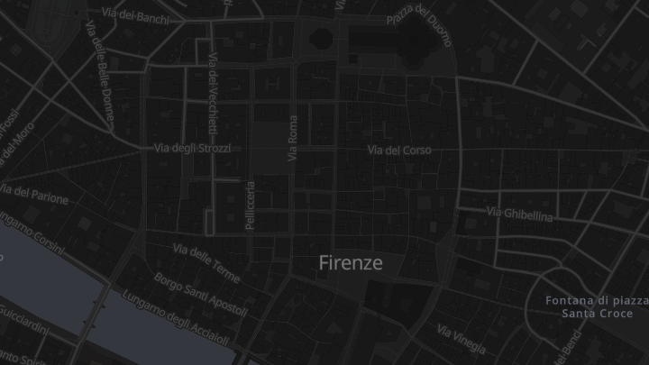

Expand description
The Rust core of basemapper: render MapLibre GL basemaps headlessly, with no browser, display server, GPU or GDAL. Vector styles are drawn by a CPU port of MapLibre GL JS’s renderer, tested pixel by pixel against MapLibre GL JS; raster tiles, PMTiles archives, ArcGIS services and OGC services work too. Images come out at any fractional zoom and pixel ratio, as PNG, RGBA pixels or true vector SVG.
The R and Python packages are built on this crate and share its functions and
argument names: R’s verb(m, ...) and Python’s m.verb(...) are
Basemap’s m.verb(...) here.
[dependencies]
basemapper-core = { git = "https://github.com/ar-puuk/basemapper" }Every example on this page is a program in the crate’s examples/ folder.
The documentation build runs them; the images and output shown are what they
produced. Run one yourself with
cargo run --release --example guide_quickstart.
§A basemap in a few lines
A Basemap is a view: a style (or several, stacked), a size in CSS pixels,
a centre and MapLibre zoom (or bounds to fit), and a device pixel ratio.
providers::basemap_provider turns a
leaflet-providers
name into a style; a MapLibre style URL, style JSON, tile URL, TileJSON,
PMTiles archive or ArcGIS service works directly as a style too.
//! A named basemap rendered to a PNG.
use basemapper_core::providers::{basemap_provider, ProviderOptions};
use basemapper_core::Basemap;
use std::path::Path;
fn main() -> Result<(), Box<dyn std::error::Error>> {
// "OpenFreeMap.Positron" is a leaflet-providers name; any MapLibre style
// URL, style JSON or tile data works in its place.
let style = basemap_provider("OpenFreeMap.Positron", &ProviderOptions::default())?;
let m = Basemap::new(style)
.size(720, 405)
.center(-111.8887, 40.7556)
.zoom(12.4)
.pixel_ratio(1.0); // 2.0: a sharp 2x image of the same view
m.render_png(Some(Path::new("quickstart.png")))?;
let (w, h) = m.get_size();
println!("{w} x {h} px at zoom {:.1}", m.get_zoom());
println!("bounds (lon/lat): {:.4?}", m.get_bounds(true));
println!("credit: {}", m.get_attribution()?);
Ok(())
}Output:
720 x 405 px at zoom 12.4
bounds (lon/lat): [-111.9355, 40.7356, -111.8419, 40.7756]
credit: OpenFreeMap © OpenMapTiles Data from OpenStreetMap
Basemap::render_array returns the pixels instead (straight-alpha RGBA,
with the bounds in Web Mercator), and Basemap::render_svg an SVG.
set_view(), set_bounds() and the get_*() methods change and read the
view.
§Raster and vector basemaps, as PNG and SVG
A basemap is drawn from raster tiles (images, like OpenStreetMap’s) or from
vector tiles (geometry styled on the fly, like OpenFreeMap’s). Either renders
to a PNG (Basemap::render_png) or an SVG (Basemap::render_svg). In an
SVG, vector layers become paths and labels editable text with the style’s
fonts embedded (or outlines; see SvgOptions); raster tiles are embedded as
images.
//! Raster and vector basemaps, each as a PNG and as an SVG.
use basemapper_core::providers::{basemap_provider, ProviderOptions};
use basemapper_core::{Basemap, SvgOptions};
use std::path::Path;
fn main() -> Result<(), Box<dyn std::error::Error>> {
let raster = basemap_provider("OpenStreetMap.Mapnik", &ProviderOptions::default())?;
let vector = basemap_provider("OpenFreeMap.Bright", &ProviderOptions::default())?;
for (name, style) in [("raster", raster), ("vector", vector)] {
let m = Basemap::new(style).size(480, 300).center(-111.8910, 40.7608).zoom(11.5);
let png = m.render_png(Some(Path::new(&format!("{name}.png"))))?;
// SVG: vector layers as paths and text; raster tiles as embedded images.
let svg = m.render_svg(Some(Path::new(&format!("{name}.svg"))), &SvgOptions::default())?;
println!("{name}: {name}.png {} KB, {name}.svg {} KB ({} paths, {} images)",
png.len() / 1024, svg.len() / 1024, svg.matches("<path").count(), svg.matches("<image").count());
}
Ok(())
}Output:
raster: raster.png 228 KB, raster.svg 305 KB (0 paths, 1 images)
vector: vector.png 81 KB, vector.svg 429 KB (2132 paths, 3 images)| PNG | SVG | |
|---|---|---|
| Raster (OpenStreetMap) |  | |
| Vector (OpenFreeMap Bright) |  |  |
§Stacking styles
Basemap::stack draws several styles bottom to top, as one image. With
Labels::Only, a vector basemap contributes just its labels, on a
transparent background: here over satellite imagery.
//! Styles stacked bottom to top: satellite imagery under a vector
//! basemap's labels.
use basemapper_core::providers::{basemap_provider, ProviderOptions};
use basemapper_core::{Basemap, Labels};
use std::path::Path;
fn main() -> Result<(), Box<dyn std::error::Error>> {
let imagery = basemap_provider("Esri.WorldImagery", &ProviderOptions::default())?;
let labels = basemap_provider(
"OpenFreeMap.Liberty",
&ProviderOptions { labels: Labels::Only, ..Default::default() },
)?;
let m = Basemap::stack(vec![imagery, labels])
.size(720, 405)
.center(-111.8887, 40.7556)
.zoom(13.0);
m.render_png(Some(Path::new("hybrid.png")))?;
println!("credit: {}", m.get_attribution()?);
Ok(())
}Output:
credit: Tiles © Esri — Source: Esri, i-cubed, USDA, USGS, AEX, GeoEye, Getmapping, Aerogrid, IGN, IGP, UPR-EGP, and the GIS User Community | OpenFreeMap © OpenMapTiles Data from OpenStreetMap
§Labels, features and layers
list_layers lists a style’s layers in drawing order, with the source
layer each one draws and the feature it shows (background, water,
landcover, parks, buildings, roads, rail, boundaries, places, poi, terrain).
Given a LayerFilter, it lists the layers a render with that filter draws.
The same filters go on a Basemap: labels(), features(), and
layers() for exact layer ids (with * and ? wildcards, - to drop).
//! Parts of a basemap: list a style's layers with what they show, preview a
//! filter, and render with it.
use basemapper_core::providers::{basemap_provider, ProviderOptions};
use basemapper_core::{list_layers, Basemap, LayerFilter, Labels};
use std::path::Path;
fn main() -> Result<(), Box<dyn std::error::Error>> {
let style = basemap_provider("OpenFreeMap.Liberty", &ProviderOptions::default())?;
let all = list_layers(&style, None, &LayerFilter::default())?;
println!("{} layers; the first five:", all.len());
for l in all.iter().take(5) {
println!(" {:<22} {:<10} {:<14} {}", l.id, l.kind, l.source_layer.as_deref().unwrap_or("-"), l.feature);
}
// Water, parks and roads, without labels.
let features: Vec<String> = ["water", "parks", "roads"].map(String::from).to_vec();
let filter = LayerFilter { labels: Labels::None, features: Some(features.clone()), ..Default::default() };
println!("the filter keeps {} layers", list_layers(&style, None, &filter)?.len());
Basemap::new(style)
.size(720, 405)
.center(-111.8887, 40.7556)
.zoom(12.4)
.labels(Labels::None)
.features(features)
.render_png(Some(Path::new("layers.png")))?;
Ok(())
}Output:
111 layers; the first five:
background background - background
natural_earth raster - terrain
park fill park parks
park_outline line park parks
landuse_residential fill landuse landcover
the filter keeps 56 layers
§PMTiles
A PMTiles archive holds a whole
tileset in one file, read with HTTP range requests or from disk: no tile
server needed. A raster archive works directly as a style. A vector archive
gets a default style over every source layer, or draws with a full basemap
style whose source points at it: here the
Protomaps light and dark styles
(in the crate’s guide/styles/, which explains how they were made) over an
archive of Florence.
//! PMTiles archives, read over HTTP with range requests (a local path works
//! too): a raster archive as it is, and a vector archive drawn with the
//! Protomaps basemap style, light and dark.
use basemapper_core::{Basemap, Crs};
use std::path::Path;
fn main() -> Result<(), Box<dyn std::error::Error>> {
// A raster archive draws as it is: a USGS topographic map, fitted to
// the archive's extent.
let topo = Basemap::new("https://pmtiles.io/usgs-mt-whitney-8-15-webp-512.pmtiles")
.size(720, 405)
.bounds([-118.3198, 36.5611, -118.2607, 36.5930], Crs::LonLat)?;
topo.render_png(Some(Path::new("pmtiles-raster.png")))?;
println!("raster: fitted at zoom {:.2}", topo.get_zoom());
// A vector archive with a full basemap style: the Protomaps styles in
// guide/styles/, whose source is `pmtiles://` and the archive's URL.
let styles = concat!(env!("CARGO_MANIFEST_DIR"), "/guide/styles");
for flavor in ["light", "dark"] {
let m = Basemap::new(format!("{styles}/protomaps-{flavor}.json"))
.size(720, 405)
.center(11.2551, 43.7710)
.zoom(15.2);
m.render_png(Some(Path::new(&format!("pmtiles-{flavor}.png"))))?;
println!("{flavor}: {}", m.get_attribution()?);
}
Ok(())
}Output:
raster: fitted at zoom 12.81
light: Protomaps © OpenStreetMap
dark: Protomaps © OpenStreetMap


To use the styles with your own Protomaps archive, change the source’s url
to pmtiles:// and the archive’s URL or path.
§More
tile_style()builds a style for your own tile data (raster or vector, with paint overrides);providers::wms_styleandproviders::wmts_stylefor OGC services.attributionandBasemap::get_attributionreturn the credit line the providers ask maps to show.- Tiles are cached on disk (
cache), for as long as the servers’ caching headers allow;BASEMAPPER_CACHE_DIR=offturns the cache off. - Errors are
BasemapError;BasemapError::kindnames the kind for bindings. - The R and Python documentation have more examples, with plots in ggplot2, tmap, matplotlib and plotnine.
Re-exports§
pub use basemap::Basemap;pub use basemap::Crs;pub use bbox::bbox_from_center;pub use bbox::compute_zoom;pub use bbox::fit_bounds;pub use bbox::RenderRequest;pub use bbox::RenderResult;pub use bbox::SpatialBounds;pub use error::BasemapError;pub use style::filter_style_layers;pub use style::StyleInput;pub use features::Labels;pub use tile_fetcher::TileSource;pub use tile_fetcher::TileUrls;pub use tile_style::TileKind;pub use tile_style::TileStyleOptions;pub use vector::fonts::FontEmbed;pub use vector::fonts::SvgOptions;pub use vector::fonts::SvgText;
Modules§
- attribution
- The attribution text styles ask maps to show.
- basemap
Basemap: a map view to render, the Rust counterpart of R’sbasemap()and Python’sbasemapper.basemap()/Basemap.- bbox
- cache
- A disk cache for map tiles, so repeated renders of an area do not fetch the same tiles again (tile usage policies such as OpenStreetMap’s ask clients to cache).
- error
- features
- Labels and map features: select parts of a style to stack basemaps.
- providers
- Named basemaps and OGC service styles.
- renderer
- style
- tile_
fetcher - tile_
style - Styles for tile data: anything a user may pass as
stylethat is not itself a style. MapLibre always needs a style; when it is given a tile URL, a TileJSON, a PMTiles archive or an ArcGIS service instead, the style is built here, the way one would write it for MapLibre: - vector
- In-house CPU vector-tile renderer: MVT decode, MapLibre style evaluation, and tiny-skia rasterisation. Targets pixel parity with MapLibre GL JS (measured by tests/golden.rs).
Structs§
- Layer
Filter - Filters to preview with
list_layers, as the renderers take them. - Layer
Info - A style layer, as
list_layerslists it.
Functions§
- attribution
- The attribution text of
styles(stacked styles, the stringsBasemaptakes): every source the styles draw from contributes its attribution (from the style, its TileJSON or PMTiles metadata), as plain text, without duplicates, joined with" | ". Empty when none is given. - encode_
png - Encode straight-alpha RGBA pixels as a PNG file.
- list_
layers - A style’s layers in drawing order; with a filter, the layers a render with that filter draws (none when it leaves nothing).
- render
- Render a basemap tile mosaic to a flat RGBA byte array.
- render_
stack - Render several styles over the same view and composite them bottom to top (straight-alpha source-over), e.g. a basemap published as separate services. All requests must share bbox, size and pixel ratio.
- render_
svg - Render a vector style as an SVG document (see
render_svg_stack). - render_
svg_ stack - Render several styles over the same view as one SVG document, bottom to top, each style in its own group (e.g. a basemap built from separate services). Fills, lines and circles are vector paths; labels are glyph outlines traced from the style’s SDF glyphs; non-SDF icons are embedded sprite images. All requests must share bbox, width and height, and use vector tile sources.
- render_
svg_ stack_ with render_svg_stackwith options: label text as editable<text>with embedded fonts (default) or as traced glyph outlines.- render_
svg_ with render_svgwith options (seerender_svg_stack_with).- tile_
style - A style for tile data, with overrides: a tile URL template, TileJSON,
PMTiles archive (URL or path) or ArcGIS service, as raster tiles or a
default vector style over its source layers (see the
tile_stylemodule). A style URL or file is returned as is (relative URLs made absolute). Detecting raster or vector may fetch a tile or the archive header. Returns the style JSON and thepaintkeys that matched no generated layer.